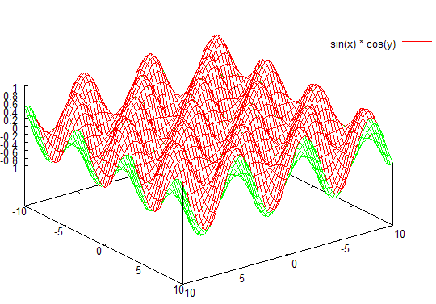
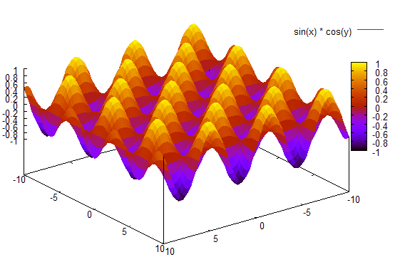
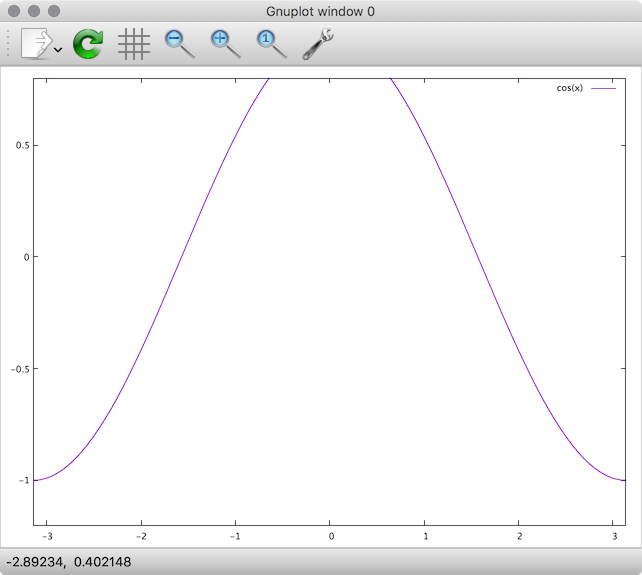
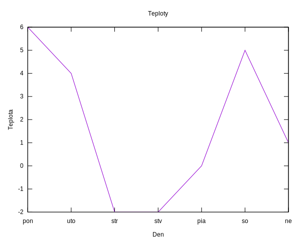

Čo je gnuplot?
Ako uvádza FAQ (často kladené otázky), gnuplot je multiplatformový nástroj, ktorý umožňuje:
- kreslenie dvoj- a viacrozmerných funkcií a bodov v rôznych štýloch
- výpočty nad celými, reálnymi a komplexnými číslami
- podporu veľkého množstva operačných systémov (Linux, Win32, Atari(!)…)
- možnosť definícií vlastných funkcií a konštánt
gnuplot je primárne nástrojom určeným pre príkazový riadok, ale existujú aj grafické užívateľské rozhrania (napr. pre X11, Win32, MacOS)
Stiahnutie pre platformy
Windows
Binárky pre gnuplot sú k dispozícii v podobe inštalátora z oficiálneho portálu na SourceForge.net.
Nastavenie písma
gnuplot používa vo Windowse pomerne neštandardné písmo. Zmeniť ho môžeme pravým kliknutím do okna, zvolením Choose Font a vybratím obľúbeného písma (napr. Fixedsys alebo Courier New). Nastavenie uložíme opäť pravým kliknutím a vybratím Update setting...
MacOS
Najľahší spôsob je inštalácia cez Homebrew. MacOS fungujú najlepšie s terminálom qt:
brew install gnuplot --with-qt
Práca s gnuplotom
Vykresľovanie a výpočty sú riadené príkazmi, ktoré zvyknú mať parametre. Príkaz zadáme a potvrdíme Enterom.
Vykreslenie grafu funkcie jednej premennej
Jednoduché vykreslenie grafu funkcie sin(x):
plot sin(x)
Vykreslenie funkcie na intervale (-π, π):
plot [x=-pi:pi] sin(x)
pi je užívateľská premenná, je definovaná ako 3.14159265358979.
Vykreslenie funkcia na intervale s obmedzením intervalu pre funkčných hodnôt:
plot [x=-pi:pi] [0:1] sin(x)
Vykreslí sa funkcia sínus, budú zobrazované len hodnoty nad osou.
Funkcie dvoch premenných
Na kreslenie funkcií viacerých premenných slúži príkaz splot
splot sin(x) * cos(y)
Mätež možno napraviť zakázaním vykresľovania skrytých povrchov:
set hidden3d
Nezabudnite po zadaní tohto príkazu vykonať
replot
Tento príkaz znovu vykoná posledný zadaný príkaz plot alebo splot.
Tip: posledný zadaný príkaz zobrazíte stlačením klávesu šípka hore.
Niekedy sa môže stať, že vykreslená funkcia bude vyzerať príliš „hranato“ (napr. uvedená funkcia by mala mať „ladné krivky“). V takom prípade treba zvýšiť presnosť používanú pri vykresľovaní.
set isosamples 40
Podotknime, že čím vyššia presnosť, tým bude vykresľovanie trvať dlhšie.

Ak chceme vykresľovať plochy ako vyplnené (nielen pomocou čiar), môžeme použiť zapnúť vyplňovací režim:
set pm3d

Vykresľovanie skrytých povrchov môžete zas zakázať pomocou:
unset hidden3d
Opäť môžeme obmedziť intervaly premenných:
splot [x=0:10] [y=0:10] sin(x) * cos(y)
Do jedného grafu môžeme vykresliť viacero funkcií:
plot [x=-pi:pi] [0:1] sin(x), cos(x), cos(2*x)
Ak používame skript (zoznam súborov obsahujúci príkazy), a potrebujeme rozdeliť jeden príkazový riadok gnuplot-u na viacero riadkov v textovom editore, použijeme znak spätnej lomky '\'.
plot [x=-pi:pi] [0:1] \
sin(x), \
cos(x), \
cos(2*x)
Užívateľské premenné a funkcie
gnuplot umožňuje definíciu užívateľských funkcií a premenných:
f(x) = sin(x)
definuje užívateľskú funkciu ‘‘f(x)’’. Potom môžeme používať túto funkciu nasledovne:
plot f(x)
čím sa vykreslí sínus.
Podobne možno definovať aj vlastné premenné:
a = 0.5
Potom môžeme písať:
plot a * f(x)
Pozor pri definícii premenných na rozdiel medzi celočíselnými a reálnymi premennými. Ak zadáte
lambda = 3
print 5 / lambda
tak výsledkom bude 1 a nie 1.666…, pretože sa delí celočíselnou premennou! Píšte radšej
lambda = 3.0
print 5.0 / lambda
Zoznam užívateľsky definovaných premenných resp. funkcií vypíšeme pomocou show variables resp. show functions.
Najdôležitejšie možnosti grafu
- Nastavenie vykresľovania okrajov grafu:
set border, resp.set noborder - Nastavenie vykresľovania mriežky:
set grid, resp.set nogrid - Nastavenie nadpisu:
set title "Nádherný graf funkcie sínus" - Nastavenie titulkov čiar:
plot sin(x) title "sínus" - Nastavenie titulkov osí:
set xlabel "názov osi", resp.set ylabel "názov osi" - Zmena veľkosti – príkaz
set size** nastavenie normálnej veľkosti:set size 1,1** nastavenie veľkosti so zachovaním pomerov:
set size ratio pomer x-veľkosť, y-veľkosť
kde je zadaný pomer ako číslo reprezentujúce osi y-ovej ku x-ovej gnuplot sa snaží vytvoriť graf so zadaným pomerom osí na ploche vymedzenej veľkosťami x-veľkosť, y-veľkosť. Napr.
set size ratio 2 0.7, 0.7
zabezpečí, že výška grafu bude dvojnásobok šírky. Namiesto ratio 1 možno písať square. Vrátiť nastavenia na implicitné hodnoty terminálu možno pomocou nosquare, noratio.
Ďalšie možnosti sa týkajú skupiny príkazov set, informácie sú v dokumentácii.
Terminály
gnuplot podporuje výstup do rôznych formátov – hovorí sa tu o výstupných zariadeniach, či termináloch. Zoznam dostupných terminálov možno zobraziť pomocou
show terminal
Implicitným terminálom býva typicky windows (na platforme Windows), či X11 (na *ixoch). Terminál možno zmeniť pomocou
set term názov_terminálu
Terminál windows vykresľuje graf do ďalšieho okna, ostatné terminály sú vhodné na zápis do súboru.
Hlúpy terminál do terminálu
Na niektorých platformách je k dispozícii hlúpy terminál dumb, ktorý vykresľuje dáta do konzoly. Vykreslenie sínusu potom vyzerá nasledovne:
1 +-----------------------------------------------------------------+
| *+ * + * ** + * * |
0.8 |-+ * * * * sin(x)********-|
0.6 |-+ * * * * * * +-|
| * * * * * * |
0.4 |*+ * * * * * *+-|
|* * * * * * * |
0.2 |*+ * * * * * *+-|
0 |-* * * * * * *-|
| * * * * * * *|
-0.2 |-+* * * * * * +*|
| * * * * * * *|
-0.4 |-+* * * * * * +*|
| * * * * * * |
-0.6 |-+ * * * * * * +-|
-0.8 |-+ * * * * * * +-|
| * * + ** * + * * |
-1 +-----------------------------------------------------------------+
-10 -5 0 5 10
Terminál qt pre MacOS
Štandardný terminál pre MacOS od Yosemite a vyššej je qt.

Výstup do formátu pre LaTeX
Ak chceme vytvoriť obrázok vo formáte prostredia picture pre LaTeX, musíme po zmene terminálu nastaviť aj výstupný súbor, inak sa údaje zobrazia na štandardnom výstupe.
set term latex
set output 'D:\obrazok.tex'
replot
Po vykonaní týchto príkazov môžeme vykonať zase set term windows.
Výstup do formátu JPG
JPG obrázok môžeme vytvoriť jednoducho. Stačí nastaviť správny terminál a vykresliť graf.
set term jpeg
set output 'D:\obrazok.jpg'
plot sin(x)
# alebo replot, ak chceme obrázok len vykresliť znovu
set term windows
V danom adresári sa vytvorí súbor s obrázkom.
Každý terminál môže mať ďalšie možnosti (veľkosť písma, zapnutie podpory farieb…). Bližšie informácie sú v dokumentácii.
Dáta zo súboru
gnuplot vie vykresľovať aj statické dáta, a to dokonca zo súboru. Namerajme si teploty a uložme do súboru D:\teploty.txt.
den teplota
pon 6
uto 4
str -2
stv -2
pia 0
so 5
ne 1
Príkaz plot dokáže kresliť dáta zo súboru:
plot "D:\teploty.txt" using 2:xticlabels(1) with lines notitle
Takto sa vykreslia jednotlivé teploty, pričom
2indikuje druhý stĺpec nesúci teplotyxticlabels(1)vyhlási prvý stĺpec (s dňami) za nositeľa popiskov pre x-ovú oswith linesnakreslí úsečky medzi bodmi, čím zvýrazní priebeh teplôt. Bez tohto nastavenia uvidíme len samotné body (aj to nie veľmi výrazne.)notitlevypne ničnehovoriaci popisok dátovej čiary
Plný príklad s popiskami
V úplnom príklade môžeme ešte nastaviť titulok grafu (title), prispôsobiť x-ovú a y-ovú popisku osi:
set title "Teploty"
set xlabel "Den"
set ylabel "Teplota"
plot "D:\teploty.txt" using 2:xticlabels(1) with lines notitle

Zložitejší príklad
cd 'D:\test\prasta2'
# vypise aktualnu cestu
pwd
# vymaze terminal
clear
set size 0.6,0.6
set term latex
e = exp(1)
#-----------------------------------------------------------------
set output 'pic_rozdelenie_ex.tex'
set title ''
exdelta(x) = (1/delta)*(e**(-x/delta))
plot [x=1:150] [0:0.15] \
delta = 5., exdelta(x) title '$\delta = 5$', \
delta = 10., exdelta(x) title '$\delta = 10$', \
delta = 25., exdelta(x) title '$\delta = 25$'
set output 'pic_df_ex.tex'
exdeltadf(x) = (1-e**(-x/delta))
plot [x=0:50] [0:1] \
delta = 5., exdeltadf(x) title '$\delta = 5$',\
delta = 10., exdeltadf(x) title '$\delta = 10$', \
delta = 25., exdeltadf(x) title '$\delta = 25$'
#----------------------------------------------
set term win
print 'Jobs done'